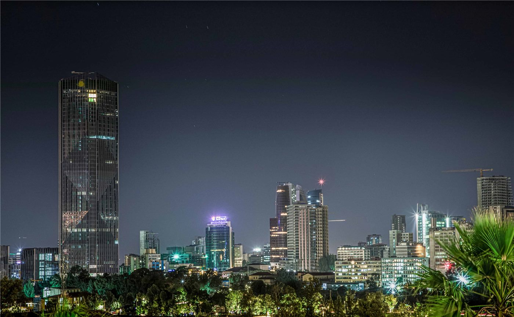

에티오피아 티그라이 반군, 이웃 암하라 공격… 성지 랄리벨라 항공편 중단
에티오피아 북부 티그라이 반군이 이웃 암하라주로 공세를 펼치면서 정부군과 공개 충돌이 벌어졌다. 군은 반군 272명을 사살했다고 밝혔고, 전투가 번지자 세계유산 암굴교회로 유명한 성지 랄리벨라행 항공편이 중단됐다.
임숙분 기자 · 2026.09.25
橋국제

에티오피아 군은 북부 티그라이주 반군이 이웃 암하라주에서 공세를 벌여 반군 272명을 사살했다고 밝혔다. 전투가 확산하면서 에티오피아의 성지로 꼽히는 랄리벨라로 가는 항공편 운항이 중단됐다고 대만 중앙통신사가 외신을 인용해 전했다.
광고 문의 · 300×250티그라이인민해방전선(TPLF) 무장세력은 티그라이와 맞닿은 암하라주 북월로 지역 여러 곳을 공격한 것으로 알려졌다. 앞서 반군은 인접한 아파르주에도 진입한 것으로 전해졌다.
불안한 평화의 균열
에티오피아 연방정부와 티그라이 지방 당국은 2020~2022년 내전을 거쳐 평화협정을 맺었지만, 이후에도 권력 배분과 무장 해제 문제를 둘러싸고 긴장이 이어져 왔다. 이번 충돌은 그 긴장이 다시 공개적인 교전으로 번졌음을 보여 준다.
랄리벨라는 12~13세기 바위를 깎아 만든 암굴교회군으로 유네스코 세계유산에 올라 있으며, 에티오피아 정교회 신자들의 대표적 순례지다. 항공편 중단은 관광과 지역 경제에도 타격이 될 전망이다.
국제사회 우려
아프리카연합과 주변국은 그동안 평화협정 이행을 촉구해 왔다. 에티오피아는 아프리카 인구 2위 국가이자 동아프리카 물류의 요충지여서, 북부 분쟁 재점화는 역내 안정에도 부담이 될 수 있다.
현지 통신 사정으로 피해 규모는 독립적으로 확인되지 않고 있다.
출처·참고 (사실 확인용 — 본문은 직접 재작성)
· 自由時報
· 聯合報
· 自由時報
· 聯合報